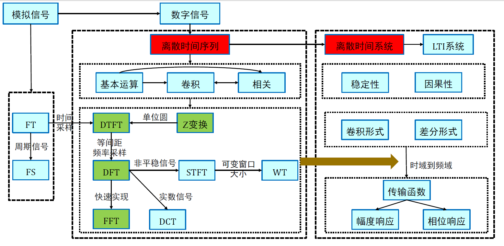

# 数字信号与模拟信号# 对比数字信号是离散的，模拟信号是连续的各种数字信号可以在同一介质上存储，不同的模拟信号需要不同的存储介质# 转换模拟信号转换为数字信号包括两个步骤：量化：确定信号强度的离散幅度采样：确定离散时间的间隔# 香农 - 奈奎斯特定理 (Shannon-Nyquist theorem)如果一个函数 x(t)x(t)x(t) 没有高于 BBB 赫兹的频率，那么它可以从其在一系列点上的函数值完全确定，这些点相隔小于 Ts=1/2BT_s=1/2BTs=1/2B 秒。精确地，有以下等式成立：x(t)=∑n=−∞+∞x[n]sin(π(t−nTs)/Ts)π(t−nTs)/Ts.x(t) = \sum_{n=-\infty}^{+\infty}x[n] \frac{\sin\left(\pi(t-nT_s)/T_s\right)}{\pi(t-nT_s)/T_s}.x(t)=n=−∞∑+∞x[n]π(t−nTs)/Tssin(π(t−nTs)/Ts).